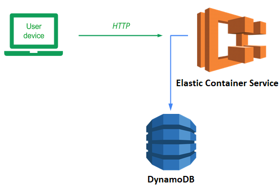
ECS is an AWS service for deploying containers. In this lab, we will deploy our guestbook application to ECS backed by a DynamoDB database.
To begin with, in your local Ubuntu VM checkout the course repository and change into the code directory.
git clone https://github.com/wu4f/cs430-src cd cs430-src/05_aws_dynamodb
View the Dockerfile. We will run the application using gunicorn which is installed by pip from requirements.txt.
Dockerfile
# Use the AWS Linux container as the base image
FROM python:alpine
# Specify your e-mail address as the maintainer of the container image
LABEL maintainer="yourname@pdx.edu"
# Copy the contents of the current directory into the container directory /app
COPY . /app
# Set the working directory of the container to /app
WORKDIR /app
# Install the Python packages specified by requirements.txt into the container
RUN pip install -r requirements.txt
# Set the parameters to the program
CMD exec gunicorn --bind :${PORT:-80} --workers 1 --threads 8 application:application
Make a single edit to this file before using it. Specify your name and PSU e-mail address as the maintainer for the container image that will be built.
Examine requirements.txt. We install flask and gunicorn, and also boto3 to interact with DynamoDB.
requirements.txt
# Web framework flask # AWS libraries boto3 # Python WSGI HTTP server (connects web servers such as nginx to app) gunicorn
Build the docker image locally
docker build -f Dockerfile -t aws_gb .
Publish the container image to the Docker Hub registry. Login to Docker Hub
docker login
Tag the image with your Docker Hub user ID. Run the following command, replacing
docker tag aws_gb <dockerhub_id>/aws_gb
Push the image to Docker Hub
docker push <dockerhub_id>/aws_gb
Show that your image was uploaded to your account on Docker Hub.
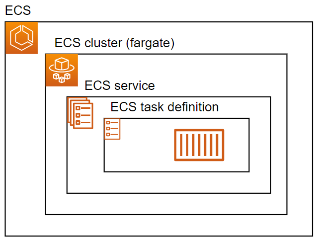
The figure above shows what we will be implementing and deploying. At the center, there is an ECS task definition that specifies, among other things, the Docker container image we want to run. It is wrapped in an ECS service specifying how we run the task and how we can reach it. Finally, the tasks and service run on a cluster of compute instances. While we can utilize a pre-defined cluster of machines, in this lab, we'll use AWS Fargate, a service that allows on-demand allocation of instances to run tasks based on usage.
Begin by visiting the ECS service in the AWS management console. Create a new task definition. Configure it with the following:
- Name the configuration
guestbook-config - Specify the container name as guestbook
- Specify the container Image URI to be the DockerHub container image (<
dockerhub_id>/aws_gb) - Ensure the port mappings have port 80 enabled
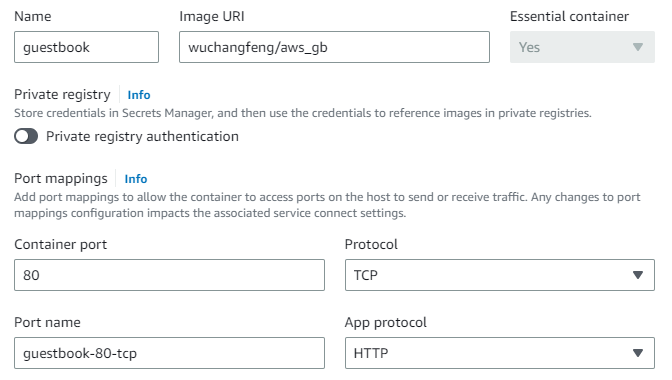
Continue to the next step and ensure that the task is configured to utilize the AWS Fargate serverless setting, then specify the task roles to be the LabRole that have been pre-defined for our AWS environment. Continue and create the definition
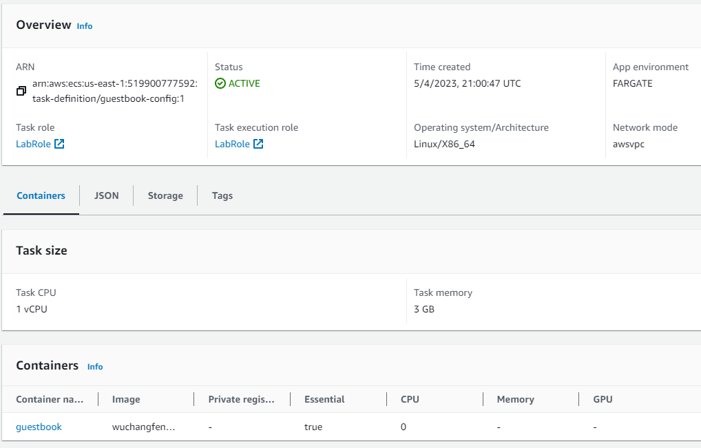
Navigate to the ECS Clusters section of the web UI and create a new cluster.
- Name the cluster
guestbook-cluster - Use the account's default VPC
- Keep AWS Fargate selected so that the cluster adds VMs to itself on-demand
Then, create the cluster. Go back to ECS Clusters and wait for the cluster to come up.
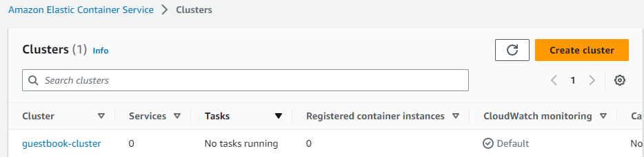
Click on the newly created cluster. In the "Services", click on "Create" to begin the creation of a service.
- Keep the Compute configuration settings set to FARGATE
- Configure the deployment's task definition to use the
guestbook-configdefinition set up previously. - Name the service
guestbook-service - In the networking section, create a new security group that allows incoming HTTP traffic from all destinations.
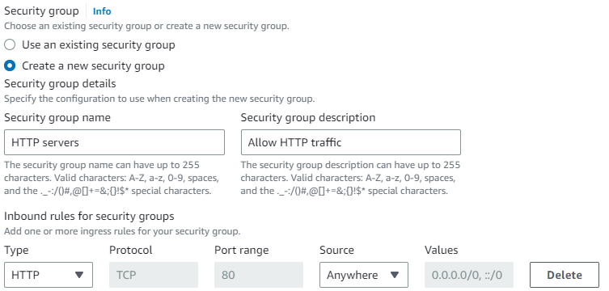
Finally, in the "Load balancing" section, configure an Application Load Balancer called guestbook-lb that will be used as a single front-end for our service. Although we will only run one container in this lab, if we spun up dozens of replicas of our task, this load balancer would then be able to define a single endpoint that would then route incoming web requests across the replicas in our backend. Name the "Target group name", guestbook-group. Create the service.
When the service has finished launching, bring up its details.
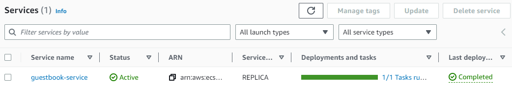
Then, click on the load balancer (guestbook-lb) that has been instantiated.

The load balancer has a DNS name associated with it that is the frontend endpoint for the service.
- Take a screenshot of the DNS name of the guestbook-lb load balancer for your lab notebook
Navigate to the site via the DNS name of the frontend. The guestbook application running on the container should come up. Add an entry with the message "Hello ECS!". Open the same IP address in another browser window, and your entry should be there!
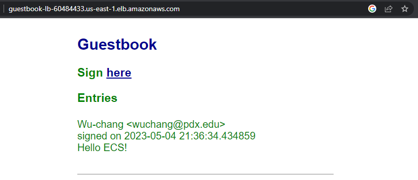
- Take a screenshot of the Guestbook app running in a browser that includes the DNS name of the site.
Delete the guestbook-service (select Force delete)
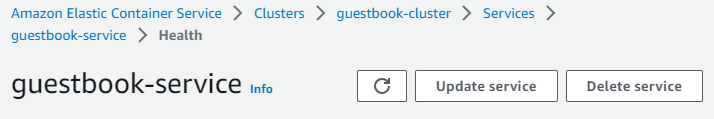
When the service has been deleted, delete the guestbook-cluster.
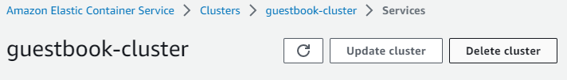
Finally, deregister the guestbook-config task definition.
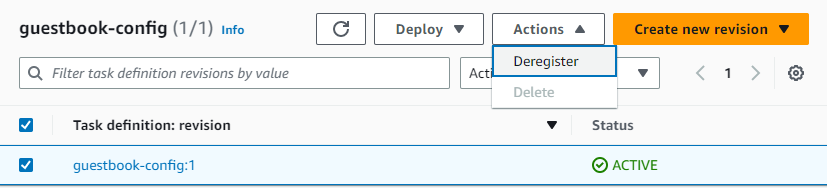